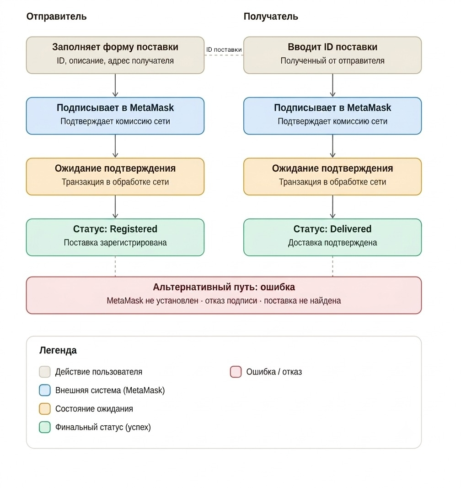
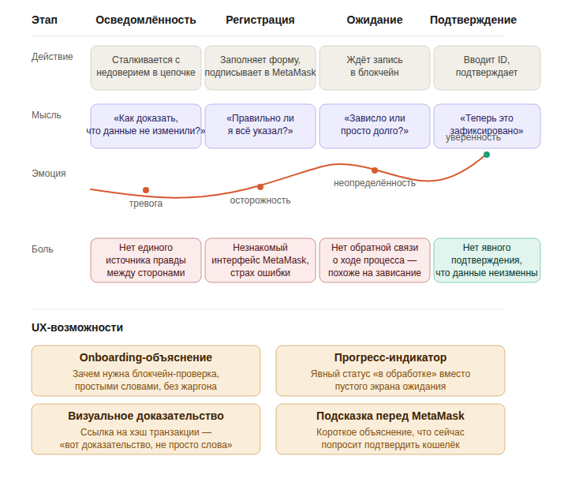
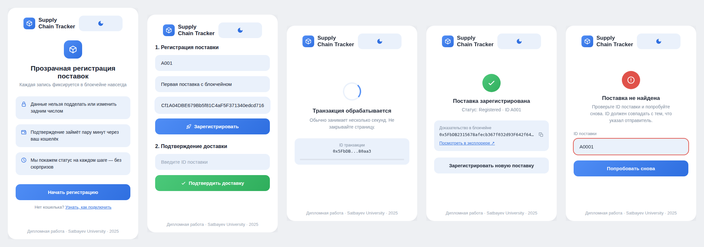
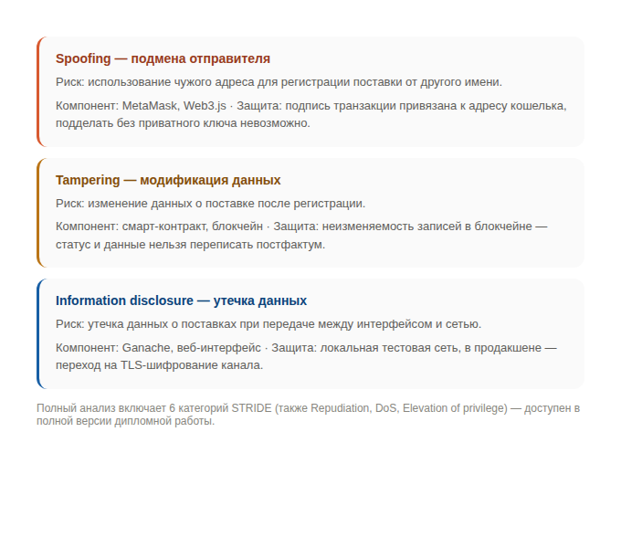
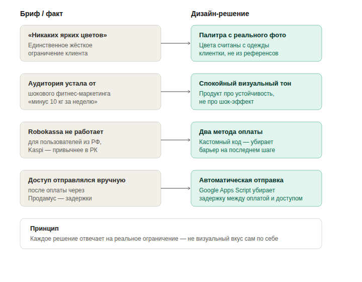
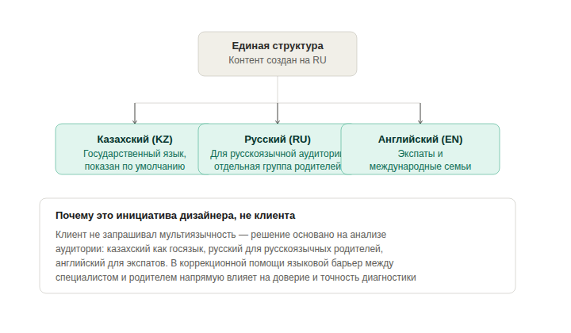

UX/UI дизайн на стыке информационной безопасности, frontend-разработки и заботы о пользователе. Три проекта — от blockchain-прототипа до сайта для родителей особенных детей — объединяет один подход: решение растёт из реального ограничения, а не из визуального вкуса.
Дипломный проект · Cybersecurity
Доверие и прозрачность в логистике через blockchain-верификацию
Дипломный проект, специальность «Информационная безопасность», Satbayev University, 2025. Соло-проект: я спроектировала интерфейс, разработала фронтенд и интегрировала его с Ethereum-смартконтрактом через Web3.js, MetaMask и локальную тестовую сеть Ganache.
В логистике остро стоит проблема доверия между участниками цепочки поставок: данные о грузе легко подделать постфактум, а единого источника правды между отправителем и получателем не существует.
50+ млрд тенге — объём теневого рынка фальшивых сертификатов в Казахстане (LSM.kz, 2024)
1100+ «серых» документов оформлены одной компанией — продукция без проверок массово поступает в госзакупки
Формальные интервью не проводились — research строился на анализе индустрии (данные LSM.kz) и конкурентном разборе двух существующих blockchain-решений в логистике: IBM Food Trust и TradeLens. Оба показывают общий паттерн — прозрачность достигается фиксацией событий в неизменяемом реестре, а не доверием к одной стороне.
Система построена вокруг двух ролей и объекта с двумя статусами (Registered, Delivered), заданными в смарт-контракте. Ключевой UX-риск — асинхронный промежуток между действием пользователя и подтверждением в блокчейне.

CJM на четыре этапа выявила три точки напряжения: непонятность технологии на старте, отсутствие обратной связи во время ожидания, отсутствие явного доказательства в момент завершения.

Светлая, дружелюбная палитра с переключателем дня/ночи — сознательный выбор против типичной тёмной «крипто-эстетики», чтобы технология не пугала пользователя, не знакомого с Web3.

Полностью рабочий HTML-прототип с валидацией, реальной задержкой обработки и переключением темы
Как часть требований специальности я провела STRIDE-анализ угроз для каждого компонента системы и сопоставила им реализованные меры защиты.

Коммерческий проект · прямой клиент
Лендинг с двойной оплатой и автоматизацией доступа для фитнес-программы
Прямой клиент — нутрициолог и фитнес-тренер, автор программы для женщин 30+. В отличие от других freelance-проектов, которые шли через менеджера по готовому ТЗ, здесь я работала в прямом диалоге с клиентом — от первого брифа до автоматизации оплаты.
Единственное жёсткое требование клиента — «никаких ярких цветов». Источником палитры стало её собственное фото, доработанное мной в ibis Paint: цвета сайта буквально считаны с одежды на фото, не взяты из референсов.

Стандартные виджеты Tilda не поддерживают два независимых способа оплаты в одном блоке — я написала кастомный код. Для казахстанской аудитории Kaspi — это не «ещё один способ», а самый привычный путь оплаты; не предложить его означало бы потерять клиента на последнем шаге воронки.
Перевела процесс с ручной рассылки через Продамус на Robokassa, написала скрипт на Google Apps Script: при оплате данные автоматически попадают в Google Sheets и триггерят отправку доступа на e-mail.
1950 срабатываний скрипта за 7 дней, частота ошибок 0.21%
Автоматизация работает стабильно, почти без сбоев и без необходимости ручного вмешательства
Коммерческий проект · прямой клиент
Сайт детского центра коррекции и развития с акцентом на доверие и спокойствие
Прямой клиент — детский центр коррекции и развития для особенных детей и дошкольников. Аудитория сайта — родители, часто уже находящиеся в состоянии тревоги. Сайт коррекционного центра — это точка первого контакта, где нужно снять тревогу, а не усилить её.
Тёмно-бирюзовая палитра с мягкими формами опирается на два основания: преемственность существующего лого центра и психологическую ассоциацию синего/бирюзового с медициной и надёжностью — сигнал «здесь безопасно» ещё до прочтения текста.
Каждый специалист показан с фото, именем и квалификацией (логопед-дефектолог, АВА-терапевт, детский психолог), с прямой кнопкой записи к конкретному человеку. Анонимность здесь увеличивает тревогу, а не снижает её.
Сайт на трёх языках — это моя инициатива, не запрос клиента. Русский добавлен не как «основной язык города», а для русскоязычной аудитории как отдельной группы родителей.

Все CTA ведут в WhatsApp с заранее заполненным сообщением — это снимает с родителя нагрузку «что написать, чтобы не выглядеть глупо» при первом обращении в коррекционный центр.
Тестовое задание · скоростное AI-проектирование
UX-гайд и архитектура образовательной платформы за ограниченное время с помощью AI-инструментов в Figma
Тестовое задание от компании, не коммерческий проект и не запущенный продукт. Условие задания — спроектировать архитектуру и UX-гайд образовательной платформы (курсы), продемонстрировав скорость работы с AI-инструментами внутри Figma — именно это и оценивалось, а не глубина проработки.
На выполнение давалось 3 дня, реальная работа заняла около 3 часов
Большая часть времени ушла не на сборку интерфейса, а на выбор концепции — само AI-проектирование в Figma заняло меньшую часть времени
Условие теста — показать, насколько быстро можно превратить текстовый контент в структурированный UX-гайд и интерфейс с помощью AI-инструментов. Здесь у меня было дополнительное преимущество: до этого я профессионально занималась переводом интерфейсов на платформе Crowdin для Nexo.com (EN→KZ, до 180 000 слов в месяц, с сохранением технических переменных в строках) — этот опыт работы с большими объёмами текста и пониманием структуры контента напрямую помог быстро ориентироваться в материале курсов и реструктурировать его для UX-гайда.